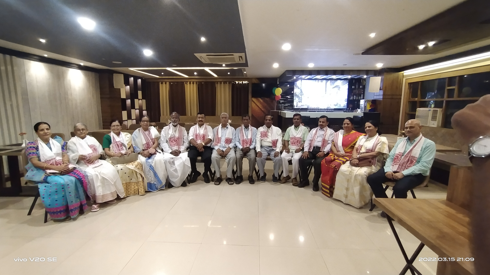

Alumni Achievers
Read the achievements and highlight material.

Cotton Collegiate Govt. H.S. School
The alumni association is building a unified directory so members can keep the master record current and reachable.
If you are an alumnus, reach out to the office to register your profile in the master database layout. The association uses the directory to keep alumni connected across locations and professions.
Alumni are encouraged to share achievements, photographs, articles, and updates so the association can maintain a living record of alumni success.